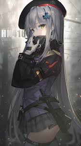

:hover{}
增加hover延时效果，优化体验(display不可以设置transition，而visibility可以)
123
:focus-within
试试在这个表单中输入点什么。(在鼠标没有连接，可以使用键盘tab)
:active,点击按下出发active，抬起取消active
适用任何html元素
div盒子
span标签
自定义元素
- :active存在的问题
- IE下，:active样式的应用无法冒泡
- IE下：html、body应用:active样式后，无法还原
- Safari浏览器，:active无效，需设置任意的touch事件(a元素：focus状态+enter=点击事件)，更好的体验是使用原生的-webkit-tap-highlight-color{}
:active主要用于点击反馈，给予用户点击反馈提示，对于按钮和连接必不可少，不适合复杂交互,移动端需要更多的点击反馈
移动端通用按钮:active点击样式
[href]:active,
button:active
{
box-shadow: inset 0 0 0 999px rgba(0, 0, 0, .05);
}
图片点击反馈::active使用移动端，使用于图片元素

css埋点数据上报
点击按钮查看网络请求
焦点伪类:focus
匹配聚焦状态的元素,默认只能匹配特定元素，包括：非disabled表单元素，包含href属性的a元素，area元素，一个页面最多只能有一个触发焦点的元素
如何使普通元素响应focus伪类？
- 设置contenteditable
- 设置tabindex
模拟浏览器原生focus轮廓